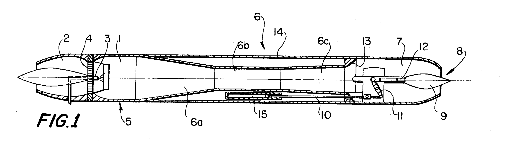

Inventor: Georg Heise, Ailingen, Germany
Assignee: Dornier A.G., Friedrichshafen/Bodensee, Germany
Filed 14 September 1970 · Appl. No. 72,046 · German priority P 19 64 226.3, 22 December 1969
Int. Cl. F02k 7/04 · U.S. Cl. 60/247, 60/271 · 8 Claims, 4 Drawing Figures
Abstract. This invention relates to an improvement in a pulsation power unit comprising an inlet, valve means, injection means, a combustion chamber and a combustion cowl, the improvement comprising additional cowl means of larger diameter at the end of the combustion cowl, said additional cowl means having a variable gas outlet cross-section.
Cross-sectional view through the power unit. Hover or tap a reference numeral on the drawing to read what the specification says about that part.

The combustion chamber. Because combustion happens close to the closed valves, it produces a strong shock wave running toward the open cowl end; the wave reflected back from that end reopens the valves. The compression front arriving on the heels of the low-pressure wave re-ignites the mixture against the residual flames still in the chamber, in a period short enough that combustion is very nearly constant-volume.
The air inlet, disposed ahead of the combustion chamber 1. Ambient air is drawn in through it each time the shock wave reflected from the cowl end returns as a low-pressure wave and pops the valves open. In the twin-tube embodiment of FIG. 2 a single inlet 2 is common to both combustion cowls, and it is given an elliptical cross-section so the front face of the unit stays as small as possible.
The fuel injection device, positioned in the centre of the ring of flap valves 4. Fuel is admixed to the incoming air at the same instant the intake occurs, so the charge is already mixed as it enters the combustion chamber.
Flap valves between the air inlet 2 and the combustion chamber 1. They are what make the operation pulsating: they open to the low-pressure wave travelling back from the cowl, admit a fresh charge, and are slammed shut again by the following compression wave so that combustion takes place against a closed front end. They are uniformly distributed over the cross-section of the air inlet in the known manner.
An ignition device used only for starting the power unit. Once the cycle is self-sustaining the residual flames in the combustion chamber re-ignite each charge. The patent notes it “may be disposed at a place not further designated in the drawing.”
The combustion cowl, or flame tube, attached to the rear end of the combustion chamber 1 as its axial extension. It is built from three parts: the transition member 6a, the combustion cowl centre piece 6b and the connecting piece 6c. Its job is to reflect the compression waves discharging from the chamber back with the opposite sign and at sufficient intensity, which is only possible if the tube does not simply end in a taper or a nozzle.
The transition member of the combustion cowl. It compensates for the difference in diameter between the combustion chamber 1 and the narrower combustion cowl centre piece 6b.
The combustion cowl centre piece — the constant-diameter middle section of the cowl. Its diameter is slightly smaller than that of the combustion chamber 1. It is this cross-sectional area that the widened portion 7 must roughly double.
The connecting piece at the end of the combustion cowl centre piece 6b. It is shaped in a diffuser-like manner and is secured to the widened portion 7.
The widened portion — the additional cowl of larger diameter fitted at the end of the combustion cowl 6, and the improvement the patent claims. Its cross-sectional area is approximately twice that of the combustion cowl centre piece 6b and its length about one-third that of the combustion cowl. Proportioned this way, the waves reflected at the nozzle 8 intensify the processes inside the cowl. Because pressure inside it varies with the dynamic flight pressure once the nozzle chokes, the operation of the flame tube becomes independent of flying speed — which is what lets the unit work from standstill into the transonic and supersonic range.
The nozzle mounted in the gas outlet of the widened portion 7. Its surface extension corresponds approximately to a spherical zone — in the twin-tube arrangement of FIG. 2 this shape prevents the common nozzle from reacting back onto the two tubes, whose cycles run 180° out of phase and would otherwise have one wave intensified and the other cancelled.
The jet needle, or nozzle pin, sitting in the centre of the nozzle 8 and axially displaceable within the guide 12 to vary the final outlet cross-section. Thrust of a pulsation unit first rises with flying speed as the mixture volume grows, then falls off sharply once the nozzle flow becomes critical; the needle is therefore best moved at precisely the moment the mixture volume peaks, and thereafter set according to flight condition and fuel flow so that the volume drawn in per cycle stays at its optimum.
The couple — the connecting link running forward along the unit that ties the lever 11 to the displacing mechanism 15.
The lever to which the jet needle 9 is hingedly connected at its end; the lever is in turn connected through the couple 10 to the displacing mechanism 15.
The guide within which the jet needle 9 is axially displaceable.
The cross-sectional jump, or step, at the point where the widened portion 7 joins the connecting piece 6c. This step is the heart of the invention: it reflects the compression waves with the correct sign and at sufficient intensity, so the combustion cowl behaves as though it still had an open end even though the unit as a whole now ends in a nozzle. A low-pressure wave running from the widened portion into the cowl intensifies the shock wave, which is then reflected as a low-pressure wave at this step.
The casing, or fairing, enclosing the entire propulsion unit. In the twin-tube embodiment of FIG. 2 the fairing is matched to the elliptical cross-sections of the air inlet 2 and the widened portion 7; FIGS. 3 and 4 are sections through it showing how it wraps the two flame tubes.
The displacing mechanism that drives the jet needle 9, drawn as a hydraulic operating cylinder purely to make the arrangement easy to follow — the patent is explicit that other displacing mechanisms would serve. In the twin-tube version it sits between the two combustion cowls (in FIG. 1 it is on the underside of the unit), where the needle can be put in direct operative engagement with it and the lever 11 translation eliminated.
Descriptions condensed from the patent specification (columns 1–4). Drawing reproduced from the USPTO facsimile, US3678692.pdf — FIG. 1 rotated upright from the drawing sheet. FIGS. 2–4, which show a twin-tube arrangement firing 180° out of phase into a common nozzle and reuse the same numbering, are not annotated here. See also the English translation of Heise's 1973 ZFW article.